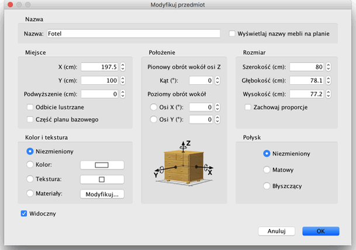

| Modyfikacja mebli | |||
| Możesz zmienić położenie, rozmiar i kąt
obrotu mebli w domu przy użyciu myszy lub opcji menu Meble >
Modyfikuj... Jeżeli wybrałeś pojedynczy element na planie możesz również zmienić jego rozmiar, podwyższenie i kąt obrotu przy użyciu jednego z czterech wskaźników umieszczonych na każdym z jego rogów.
|

|
| Kiedy kursor myszy znajduje się ponad jednym z rogów zmienia swoją postać tak by wskazać na możliwość przeciągnięcia rogu aby zmienić przyporządkowany mu atrybut obiektu. Kiedy trzymasz wciśnięty przycisk myszy pojawia się podpowiedź reprezentująca wartość konkretnego atrybutu. Zmiany są nanoszone równocześnie na plan i widok 3D. Każdy mebel może być również modyfikowany w odpowiednim oknie dostępnym poprzez podwójnekliknięcie obiektu lub menu Meble > Modyfikuj.  W oknie Modyfikuj przedmiot możesz zmienić jego nazwę,
kąt obrotu, współrzędne X i Y jego środka
na siatce planu, podwyższenie nad poziomem podłogi, szerokość,
głębokość, wysokość, kolor, widoczność.
Jeżeli obiekt nie może zostać dopasowany do Twojego projektu
możesz spróbować włączyć jego odbicie
lustrzane. Pamiętaj, że zmiana koloru czasem niesie ze sobą
nieprzewidziane skutki zmieniając cały obiekt na jeden kolor.
|
|